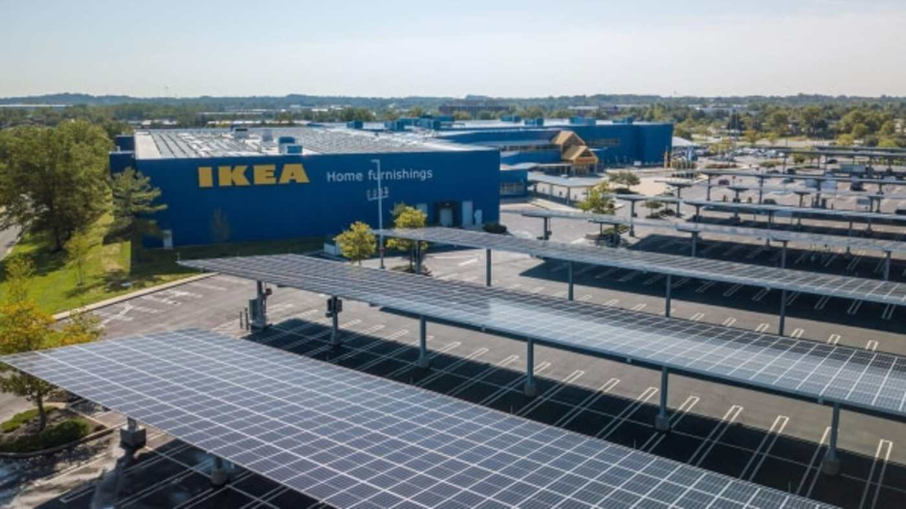

ENVIRONMENT
Karl-Henrik Robèrt
(Founder of The Natural Step)IKEA Wood Supplier
- 
Solar-Powered IKEA Store
Reusable IKEA Bag
After initial environmental issues like the highly publicized formaldehyde scandals in the early 1980s and 1992, IKEA took a proactive stance on environmental issues and tried to prevent future incidents through a variety of measures. In 1990, IKEA invited Karl-Henrik Robèrt, founder of the Natural Step, to address its board of directors. Robert's system conditions for sustainability provided a strategic approach to improving the company's environmental performance. In 1990, IKEA adopted the Natural Step framework as the basis for its environmental plan. This led to the development of an Environmental Action Plan, which was adopted in 1992. The plan focused on structural change, allowing IKEA to "maximize the impact of resources invested and reduce the energy necessary to address isolated issues."
In 2000, IKEA introduced its code of conduct for suppliers that covers social, safety, and environmental questions. Today IKEA has around 60 auditors who perform hundreds of supplier audits every year. The main purpose of these audits is to make sure that the IKEA suppliers follow the law in each country where they are based.
To make IKEA a more sustainable company, a product life cycle was created. For the idea stage, products should be flat-packed so that more items can be shipped at once; products should also be easier to dismantle and recycle. Raw materials are used, and since wood and cotton are two of IKEA's most important manufacturing products, the company works with environmentally friendly forests and cotton, whereby the excessive use of chemicals and water is avoided.
IKEA stores recycle waste and many run on renewable energy. All employees are trained in environmental and social responsibility, while public transit is one of the priorities when the location of stores is considered. Also, the coffee and chocolate served at IKEA stores is UTZ Certified.
Since March 2013, IKEA has stopped providing plastic bags to customers, but offers reusable bags for sale. The IKEA restaurants also only offer reusable plates, knives, forks, spoons, etc. Toilets in some IKEA WC-rooms have been outfitted with dual-function flushers. IKEA has recycling bins for compact fluorescent lamps (CFLs), energy-saving bulbs, and batteries.